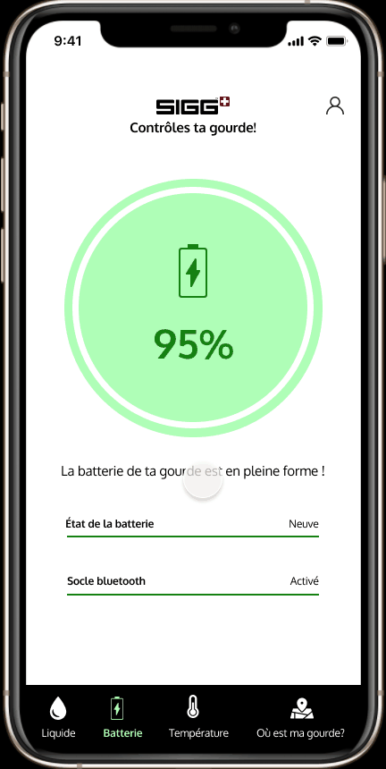
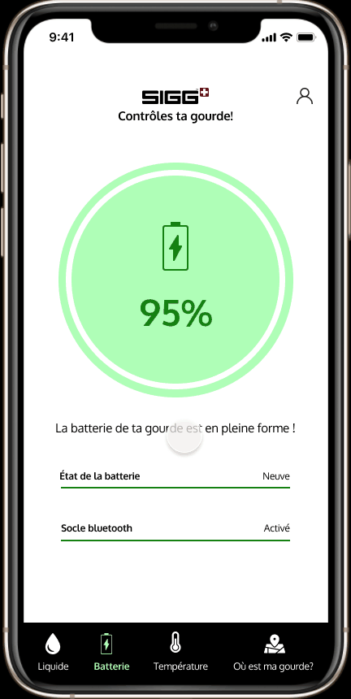

SmartBottle High-Tech SIGG
Projet humanitaire en partenariat avec Unicef.
Smart Bottle est une gourde isotherme capable d’interpréter le liquide
contenu et de proposer des solutions innovantes. Réchauffe votre
boisson chaude (thé, café …) ou refroidi votre boisson froide (eau,
boisson gazeuse, soda, …).
100% recyclable
SmartBottle
Télécharge aussi l’application !
49,99€
AJOUTER AU PANIER
 1.png)
3 jours d'autonomie, energie solaire

réglage de température chaud froid
tout type de boissons
tehcnologie de capteur sensoriels
application connectée de commande
 FAIRE UN DON
FAIRE UN DON
Caractéristiques techniques
- Gourde isotherme avec double paroi aluminium
- Capteurs thermiques
- Capteurs d'analyse du contenu (café, thé, jus...
- Film Photovoltaïque
- Calcul de température optimale + écran intégré et tactile pour régler la température proposée
- Résistance
- Système de refroidissement (GAZ R32 - plus performant et écologique)
*1x cable de charge USB Type C
*Autonomie de la batterie : 36h en mode veille / 8h en mode actif
En savoir plus
La gourde isotherme “Smart bottle” vous fournis une expérience
utilisateur complètement personnalisé (et personnalisable). Grâce à
ses capteurs thermiques qui vont prendre en compte votre chaleur
corporel et la température ambiante, elle est en mesure de vous
proposer le liquide (froid ou chaud) de votre choix à la température
idéale.
Elle est paramétrable via son écran tactile intégré ou par l’application
(Android et IOS) Smart bottle.